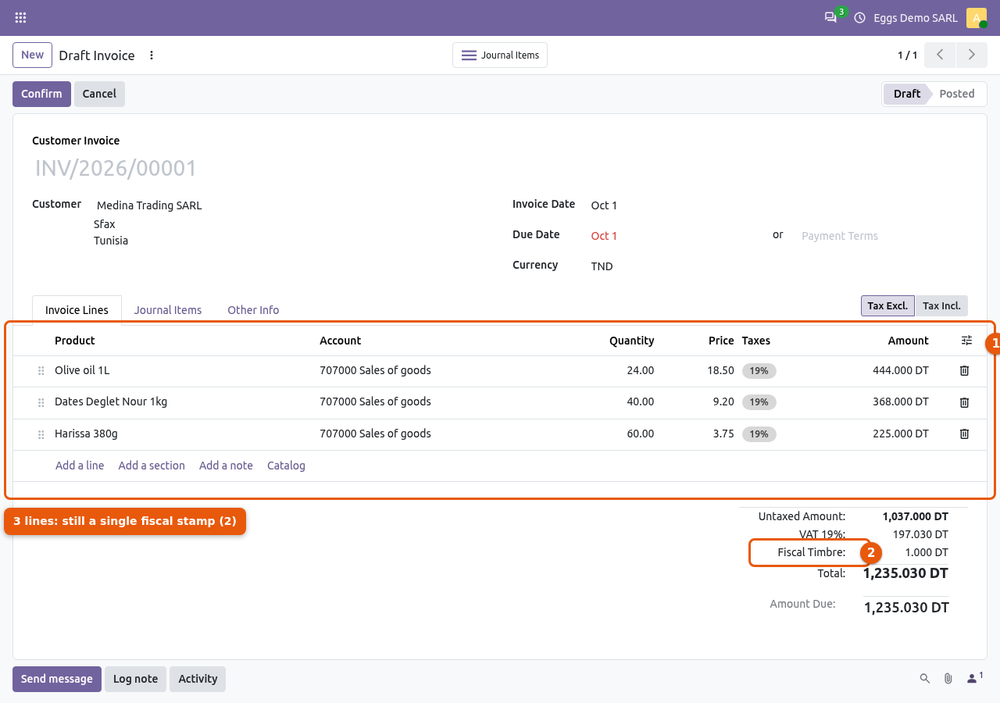
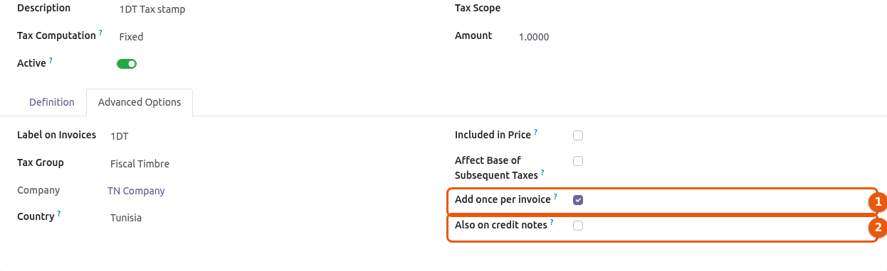
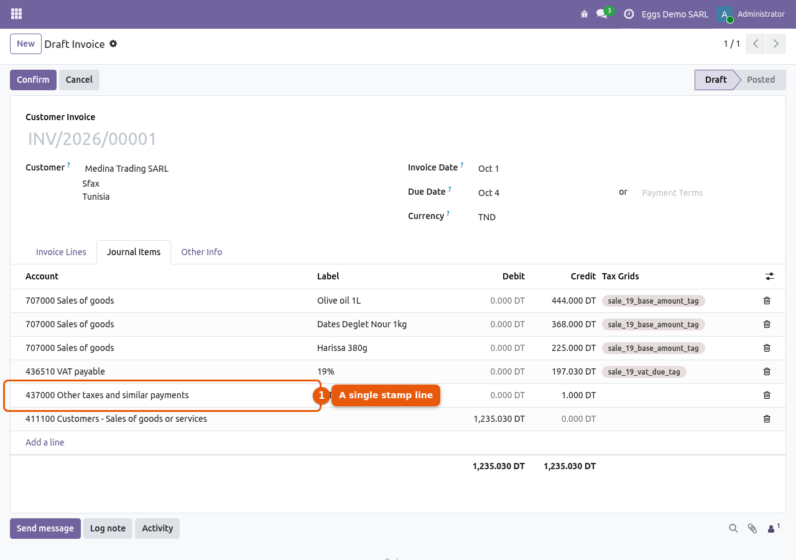

Add a fixed tax once per invoice, not once per line: fiscal stamp (timbre fiscal), stamp duty, or any fixed fee required by law on each invoice or vendor bill.
In standard Odoo, a tax of type Fixed is multiplied by the quantity of every invoice line: an invoice with 3 lines of 5 units gets 15 stamps instead of one. This module adds the tax a single time, on the whole document, and lets the standard Odoo tax engine do the rest: tax journal item, tax group in the totals, tax report, payment terms.
Typical use: the Tunisian 1 DT fiscal stamp (l10n_tn, tax “1DT Tax stamp”).
One fiscal stamp / stamp duty per invoice, whatever the number of lines and quantities.
Works for customer invoices and vendor bills, and optionally for credit notes.
Added on every invoice: created from the form, from a sales order, by import or by code.
Exemption through fiscal positions (replace the stamp by a tax of 0).
VAT base not affected; amount kept in the company currency on foreign currency invoices.
Standard accounting: dedicated tax line on the tax account, tax group in the invoice totals.

One fiscal stamp for the whole invoice, whatever the number of lines and quantities.

Check “Add once per invoice” on a fixed tax (here the Tunisian “1DT Tax stamp”).

A single tax journal item on the stamp account.
Go to Invoicing > Configuration > Taxes and open the fixed tax to apply once per invoice (e.g. “1DT Tax stamp” with the Tunisian chart of accounts).
In the Advanced Options tab, check Add once per invoice. The option is only available for taxes computed as Fixed.
Optionally check Also on credit notes.
Remove this tax from your products: it is now added to the invoice itself.
To exempt some customers or vendors, create a fixed tax of 0 that replaces the stamp (Replaces field) for their fiscal position.
Create an invoice or a vendor bill as usual.
The fixed tax is added once to the document: it appears in the totals with its tax group, and as a single tax journal item on the tax account.
Changing the lines, the fiscal position or the currency updates the tax automatically while the document is in draft. Posted documents are never changed.
The tax is not shown on the invoice lines (it is a document-level tax): it is shown in the tax totals, like any tax.
Electronic invoicing formats (UBL, Factur-X…) export the taxes of the invoice lines; a document-level tax is not exported as a line.
Port to Odoo 19. Exemption now uses the Odoo 19 fiscal positions: a tax of 0 replacing the stamp.
First release for Odoo 18: complete rewrite, free and open source (LGPL-3).
Per-invoice fixed tax for invoices and vendor bills, optional on credit notes.
Found a bug, need help or a customization? Contact us at support@eggsforge.com, we are ready to help.